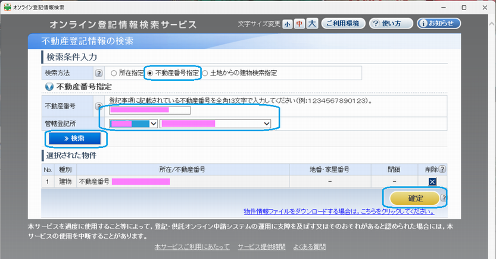

不動産の住所変更登記を自分でやる
はじめに（予備知識）
- 令和3年の不動産登記法改正により、令和8年4月1日から住所等の変更登記申請が義務化され、
不動産の所有者は、住所や氏名に変更があった日から2年以内にその変更の登記を申請しなければならない、とされた。
- 不動産の住所変更登記はPCの専用アプリを利用してオンラインで手続きできる。基本的な流れは以下。
申請書作成 → マイナンバーカードの電子証明書で署名 → 法務局に送信 → 登録免許税をオンラインで納付 → 審査 → 完了
- マイナンバーカードで電子署名するためには公的個人認証サービスに対応したICカードリーダが必要。
- 対応するICカードリーダは公的個人認証サービスポータルサイトの
申請利用機器ページの「マイナンバーカードに対応したICカードリーダライタ一覧」を参照。
- AndroidスマホをBluetooth接続のICカードリーダとして利用することができる。
- iPhoneはBluetooth接続のICカードリーダとして利用することができない（iOS制約が原因）。
- 登録免許税（手数料）は物件1件につき1000円（土地1件＋建物1件の場合は2000円）。ネットバンキングでオンライン納付できる。
- 2024年に不動産登記の住所変更をPCとICカードリーダを利用してオンラインで実施した手順を記載する。事前に参考にさせて頂いたのは以下のサイトで大変分かりやすく説明されている。
必要となるもの
- 公的個人認証サービスに対応したICカードリーダ（Amazonで1300円）。
- Windows 10または11のPC。
- マイナンバーカード。
- マイナンバーカードの署名用電子証明書暗証番号（英数字6～16文字のパスワード）。
- 署名用電子証明書暗証番号を忘れた場合は市役所や区役所で再設定できる。
- 署名用電子証明書が無い（不要としてマイナンバーカード申請した）場合は市役所や区役所で申請して付加できる。
- 新しい住所（住民票に記載されている住所表記）
- 住民票コード（11桁数字）。
- 申請書に住民票コードを記載することで、住民票の写し（証明書の原本）の提出を省略でき、オンラインで手続を完結できる。
- 住民票コード通知票の再交付を市役所市民課窓口や区役所区民課窓口で請求・取得できる（無料）。
- 住民票コード記載の住民票の写しを市役所市民課窓口や区役所区民課窓口で請求・取得できる（有料）。
- 不動産登記事項証明書（不動産番号と順位番号を確認するのに使用）
マイナンバーカードの署名用電子証明書を利用する準備
- PCに「JPKI利用者ソフト」をインストールする。
- PCにICカードリーダを接続し、ICカードリーダにマイナンバーカードを挿入する。
- PCスタートメニューから「JPKI利用者ソフト」を起動する。
- [動作確認]-[実行]でエラーが表示される場合は、PCスタートメニューから「ICカードリーダライタ設定」を起動し、
[ICカードリーダライタを自動検出する]または[PC/SC対応]（使用ICカードリーダ）がチェックされていることを確認する。
- [自分の証明書]-[署名用電子証明書]-[OK]、署名用パスワード（英数字6～16文字）を入力し[OK]で、
署名用電子証明書の基本情報が表示されることを確認し[X]で閉じる。
- [ICカードに接続できません]というエラーが表示される場合は、挿入したカードの向きが合っているか確認する。
- JPKI利用者ソフトを[終了]する。
申請用総合ソフト「登記・供託オンライン申請システム」の準備
- PCに申請用総合ソフト「登記・供託オンライン申請システム」をインストールする。
- ダウンロードページからダウンロード＆インストール。
- 申請者IDを登録する（ID、パスワード、氏名、住所、電話番号、メールアドレスなどを入力）。
- 申請者IDは1年間有効。申請用総合ソフトは平日の8：30～21：00までしか利用できない。
- ICカードリーダにマイナンバーカードを挿入した状態で、申請用総合ソフトを起動し、申請者IDとパスワードを入力しログインする。
利用時間外にログインすると右のエラーが表示される。
- 使用するICカードライブラリを登録する。
- [ツール]-[オプション]。
- [ICカード切替]タブ-[登録]。
- [OK]-[OK]。

- 使用するICカードライブラリ「公的個人認証サービス（個人番号カード）」を選択し、[適用]-[閉じる]。
不動産番号と順位番号を確認
- 対象となる土地や建物の不動産登記事項証明書で「不動産番号（13桁数字）」と自分の住所氏名が書かれた「順位番号」を確認する。
- 対象となる物件が多い場合は、種別（土地or建物）・不動産番号・地番・順位番号をリストアップしておくと良い。
申請書作成
- ICカードリーダにマイナンバーカードを挿入した状態で、申請用総合ソフトを起動し、申請者IDとパスワードを入力しログインする。
- [申請書作成] - [不動産登記申請書] - [登記申請書（権利に関する登記）【署名要】] - [登記申請書（権利に関する登記）(22)登記名義人の住所変更【署名要】]を[選択]する。
- 登記申請書を作成する。

- 件名は「住所変更登記」などと記載する（自分で分かる適当な件名で良い）。
- 氏名はマイナンバーカード記載氏名を全角カタカナで記載する。
- 登記目的は順位番号が一つしかない場合は「（順位番号）＋番所有権登記名義人住所変更」、複数ある場合は「所有権登記名義人住所変更（順位番号後記不動産の表示に記載のとおり）」と記載する。
- 原因は「令和■年■月■日住所移転」と住民票に記載された移転日を全角で記載する。
- 変更後の事項の事項名は「住所」と記載する。
- 変更後の事項の事項内容は新しい住所を住民票に記載されているとおりに全角で記載する。
- 添付情報の[住民票コード情報入力]から住民票コード（11桁数字）を全角で記載する。
- 申請年月日は自動的に入力される。
- 申請先登記所の登記所名と登記所コードは[登記所選択]から対象住所を管轄する登記所を選択する。対象物件の住所を管轄する登記所は法務局ホームページで確認できる。
- 申請人の住所・氏名・連絡先の電話番号を全角で記載する。
- 登録免許税は物件件数×1000円で計算した合計金額を半角数字で記載する。
- 電子納付（無税含む）がチェックされていることを確認する。
- 登記完了証の交付方法は「オンラインによる交付を希望する」を選択する。
- [オンライン物件検索]がチェックされていることを確認する。
- [物件情報取得]で不動産登記情報の検索画面を開く。

- [不動産番号指定]をチェックして、不動産番号を全角で入力する。
- 管轄登記所を選択する。
- [検索]で選択された物件に対象不動産が表示されたら[確定]。
- 建物の物件種別は[一般建物]などを選択する。
- [申請情報入力]で登記申請書補助画面を開き、対象登記の順位番号を全角数字で記載して[終了]。
- 対象物件右の申請情報欄に順位番号が記載されていることを確認する。
- 最初から用意されているNo1とNo2の物件はサンプルなので物件削除ボタンで削除する。
- 対象物件が複数ある場合は、物件の数だけ[物件情報取得]と[申請情報入力]を繰り返す。
- [チェック]でエラーが無いことを確認して[OK]。

- [完了]で[保存]する。
マイナンバーカードの電子証明書で署名
- 申請用総合ソフト画面の処理状況が「作成済み【未署名】」になっていることを確認する。
- PCにカードリーダーを接続し、マイナンバーカードを挿入する。
- 申請書を選択して、[署名付与]。
- [ICカードで署名] - [0K]。
- 電子証明書のアクセスパスワードを入力して[確定]。
- 署名付与が完了したら[OK]。
- [閉じる]。
法務局に送信
- 申請用総合ソフト画面の処理状況が「未送信」になっていることを確認し、[申請データ送信]。
- 添付情報の添付確認は[OK]。
- 送信対象をチェックして[送信]し[閉じる]。
- 処理状況が[到達待ち]になる。
- [更新]すると処理状況が[受付完了]になる。
- [お知らせ]でお知らせ画面を確認できる。確認したら[閉じる]。
登録免許税をオンラインで納付
- 申請用総合ソフト画面の処理状況が[受付完了]になっていることを確認し、[納付]で電子納付画面を開く。
- [納付]で表示される電子納付画面で金融機関を選択およびログインし、電子納付（インターネットバンキング）する。
右はゆうちょ銀行の画面例。
- 利用できる金融機関と利用できない金融機関がある（利用できないネット専業銀行も多い）。
- [更新]すると処理状況が[審査中]で納付状況が[納付済み]になる。
- 10～14日程度で手続き完了通知（電子公文書が発行されましたメール）が届く。